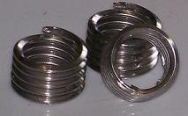
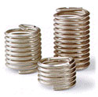

Ref : http://www.asmfasteners.com/products.html
http://www.bayrivet.com/heli_products_freeunf.htm
TANGLESS WIRE INSERT
Tangless CoilThread inserts are made of cold-rolled 304 stainless steel wire (AS7245), work-hardened to a tensile strength above 200,000 psi, and a hardness of Rc 43-50. The finished surface (8-16 micro-inches) is exceedingly smooth, virtually eliminating friction-induced thread erosion.
Assembled metricTangless Coilthread will also accommodate MJ, AS1370 and DIN male threaded fasteners.
Tangless CoilThread inserts are made of cold-rolled 304 stainless steel wire (AS7245), work-hardened to a tensile strength above 200,000 psi, and a hardness of Rc 43-50. The finished surface (8-16 micro-inches) is exceedingly smooth, virtually eliminating friction-induced thread erosion.
Assembled metricTangless Coilthread will also accommodate MJ, AS1370 and DIN male threaded fasteners.

Free Running UNF Kato Helical Inserts
CoilThread tanged inserts are made of cold-rolled 304 stainless steel wire (AS7245), work-hardened to a tensile strength above 200,000 psi, and a hardness of Rc 43-50. The finished surface (8-16 micro-inches) is exceedingly smooth, virtually eliminating friction-induced thread erosion.
When assembled with STI-tapped holes, CoilThread inserts form Unified Coarse, or Unified Fine threads that conform to the National Bureau of Standards Handbook H-28, Screw-Thread Standards for Federal Services, Classes 2B and 3B. Assembled CoilThread inserts will also accommodate UNJ, MIL-S-8879, male threaded fasteners. Metric CoilThread inserts conform to National Bureau of Standards Handbook H-28/21, M Profile, Tolerance Classes 4H5H or 5H, as well as ISO standards 68, 261, R724 and 965/I. Assembled metric inserts will also accommodate MJ, AS1370, male threaded fasteners.
CoilThread tanged inserts are made of cold-rolled 304 stainless steel wire (AS7245), work-hardened to a tensile strength above 200,000 psi, and a hardness of Rc 43-50. The finished surface (8-16 micro-inches) is exceedingly smooth, virtually eliminating friction-induced thread erosion.
When assembled with STI-tapped holes, CoilThread inserts form Unified Coarse, or Unified Fine threads that conform to the National Bureau of Standards Handbook H-28, Screw-Thread Standards for Federal Services, Classes 2B and 3B. Assembled CoilThread inserts will also accommodate UNJ, MIL-S-8879, male threaded fasteners. Metric CoilThread inserts conform to National Bureau of Standards Handbook H-28/21, M Profile, Tolerance Classes 4H5H or 5H, as well as ISO standards 68, 261, R724 and 965/I. Assembled metric inserts will also accommodate MJ, AS1370, male threaded fasteners.
